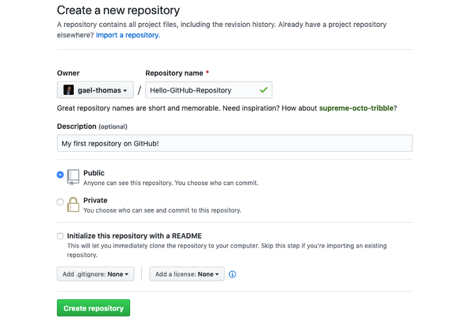
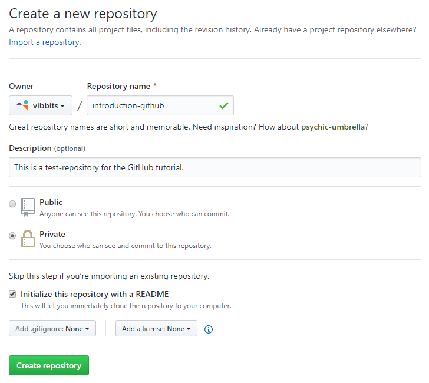
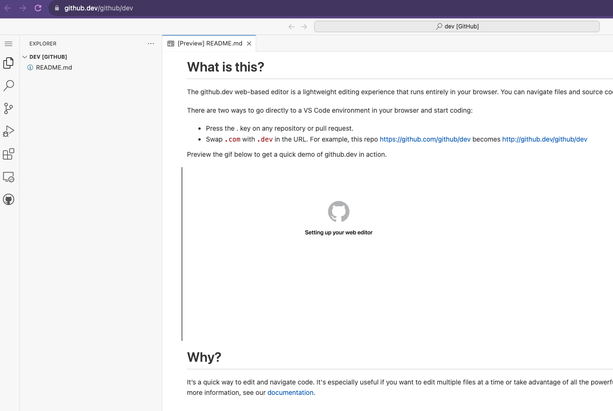
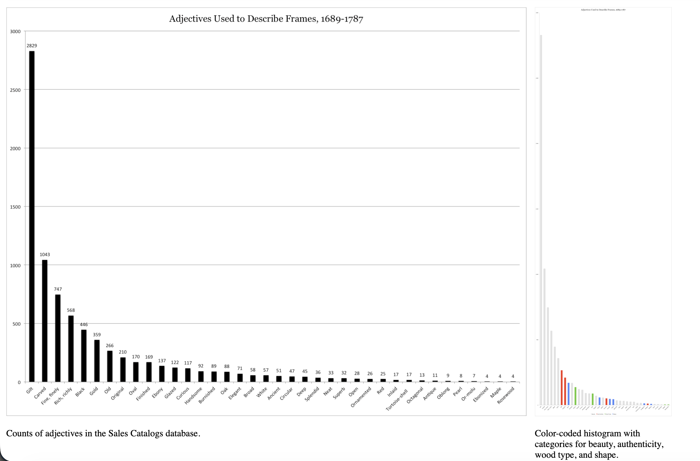

Definitions & Disciplines
What does it mean to represent culture as data?
Definitions & Disciplines
Today’s Agenda
- Complete remainder of Introduction to Version Control and GitHub.
- Discuss assigned readings and annotations.
- Discuss the semester project and group formation.
Any questions before we start?
PLEASE COMPLETE THE SURVEY!
As of this morning:
| Section | Completed | Current Students | Missing |
|---|---|---|---|
| A | 14 | 22 | 8 |
| B | 25 | 27 | 2 |
| Total | 39 | 49 | 10 |
10 current students still need to complete the survey. Please complete this ASAP so I can finalize groups for Thursday’s class. Link is on Canvas, and please reach out if you have any issues accessing it.
Working with GitHub
By now you should have your git configuration setup and have a GitHub account, but feel free to look back at our course tools lesson if you’re having any issues.
Quick Git Workflow Review
Before we move to GitHub:
- What does
git statustell us? - What is the difference between
git addandgit commit? - Where do commits live before we push them?
- What does GitHub add to our local git workflow?
Creating a Repository on GitHub
- Go to github.com
- Click the New button

Repository Settings

Repository Settings
- Name it
is310-first-repo - Choose Public so we can see each other’s work
- Leave README unchecked for now
Repository Settings

First Commit
Repository Settings

First Commit With README
To understand what each button does feel free to browse through our advanced git and GitHub resource, but first let’s try to get our local repository onto GitHub.
Connect Local to Remote
Add your GitHub repo as a “remote”:
Connect Local to Remote
Verify it worked:
Push to GitHub
Push to GitHub
Send your local commits to GitHub:
Enumerating objects: 3, done.
Counting objects: 100% (3/3), done.
Writing objects: 100% (3/3), 226 bytes | 226.00 KiB/s, done.
To github.com:username/is310-first-repo.git
* [new branch] main -> mainFatal Errors?
If you see a fatal error that looks like this:
SSH Keys (Optional but Recommended)
Tired of entering your username/password?
SSH keys let you connect securely without credentials.
You can find instructions on how to do it here
Editing on GitHub
Create Files in the Browser
Click Add file > Create new file

Create a README.md
Create a README.md
Name your file README.md and add:
Create a README.md

- Click Preview to see formatted output
- Click Commit changes
- Add a commit message
- Select main branch
GitHub Dev (Bonus Feature)
Change github.com to github.dev in your URL. So for us, we would change https://github.com/[USER NAME]/is310-first-repo to https://github.dev/[USER NAME]/is310-first-repo.

GitHub Dev
GitHub Dev (Bonus Feature)
Or press . on any repository

It’s VS Code in your browser! You can read more about it https://docs.github.com/en/codespaces/the-githubdev-web-based-editor.
Pulling Changes
The Problem
Now we have two versions:
- Local repository (on your computer)
- Remote repository (on GitHub)
They have different files! How do we sync them?
Pull from GitHub
remote: Enumerating objects: 4, done.
remote: Counting objects: 100% (4/4), done.
remote: Compressing objects: 100% (2/2), done.
remote: Total 3 (delta 0), reused 0 (delta 0), pack-reused 0
Unpacking objects: 100% (3/3), 935 bytes | 233.00 KiB/s, done.
From github.com:ZoeLeBlanc/is310-first-repo
* branch main -> FETCH_HEAD
d8dad7b..832b673 main -> origin/main
Updating d8dad7b..832b673
Fast-forward
README.md | 1 +
1 file changed, 1 insertion(+)
create mode 100644 README.mdNow ls shows the README.md file locally!
The Complete Workflow

Core Workflow Summary
- Edit files locally
- Add to staging:
git add <file> - Commit snapshot:
git commit -m "message" - Push to GitHub:
git push origin main - Pull from GitHub:
git pull origin main
Homework: Init IS310
Your Assignment
- Create a new GitHub repository called
is310-coding-assignments. - Create a new directory in your local computer called
is310-coding-assignmentsand enable it as a git repository. - Create a Markdown file called
README.mdwithinis310-coding-assignments. - Create a Markdown file called
ai-chat-log.mdif you use AI for the assignment. - Create a folder called
imageswithinis310-coding-assignments.
README Template
# Init IS310 Homework
## Proof of Installation
1. Python

2. Git

3. VS Code

4. Hypothesis Username
5. AI Tool/Workflow
Detail what AI tool, if any, you plan to use this semester.AI Chat Log
If you use AI to help complete this assignment, include:
Pushing Your Homework
Remember to connect local to remote first:
Post your repo link in the first GitHub discussion!
Resources
Questions?
Key takeaways:
- Git = local version control
- GitHub = remote hosting platform
- Workflow: edit → add → commit → push/pull
- Commit messages should be descriptive!
See also: Advanced Git & GitHub
Today’s Seminar Focus
We are thinking about two connected problems:
- How culture gets translated into data.
- Which disciplines claim authority over that translation.
Working question: What changes when we call this course Culture As Data?
First Reading: Types of Cultural Data
What is Cultural Analytics and who is Lev Manovich?


Example of Cultural Analytics: SelfieCity

Second Reading: Humanities Data
What is humanities data and who is Miriam Posner?


How can we connect these two readings?
What do both say about art history?
Manovich: Quantifying reputation and success in art

Posner: Getty Frames

Contrast & Compare
- What do these two examples have in common?
- How does each approach culture as data?
- What is Art History in each example?
What Are Networks & Disciplines?
What Is Network Science?


How does this differ from social networks? Is everything a network?
Network Science vs. Social Networks
| Term | What It Means Here |
|---|---|
| Network science | A method for studying relationships among nodes. |
| Social networks | Platforms or communities where people connect and leave traces. |
| Network as metaphor | A way we now describe almost everything: influence, publics, infrastructure, culture. |
How do we define a discipline?
Let’s explore this project! What trends do you notice?
Open Syllabus Project
How might we use data to understand the boundaries or definitions of disciplines?

Rise of Cultural Analytics
Where is cultural analytics in the Open Syllabus Project?

Why do disciplines matter for culture as data?
- What is the trouble with humanities data and how does that relate to disciplines?
- What are Manovich’s typologies and how do they relate to disciplines?
Posner’s Examples
What are the challenges with humanities data? What makes it different from other types of data?


What can we understand about digital humanities from Posner?
This is why, more than anything else, I think digital humanities is here to stay. If you can analyze something computationally, I think it’s going to be really hard to tell people that they shouldn’t.
How Can We Relate to Manovich’s Initial Questions?
What does it mean to represent a cultural object, process, or experience as data that can be then analyzed computationally? What elements of these objects, processes, and experiences can be captured, and what remains outside? How can we represent people interactions with computational cultural artifacts and systems that can react to human behaviors, communicate with them (e.g., as AI interfaces can), and act in seemingly intelligent ways? These are all fundamental questions for cultural analytics.
What Are Manovich’s Other Typologies?
- What are the four categories of cultural data?
- What is the difference between cultural data, cultural information, and cultural discourse?
- What are the three types of digital representations?
Typology 1: Four Categories of Cultural Data
- How does he define digital? Does this differ from how we define data?
- Do you agree with his four categories? Are there other categories that might be useful?
| Category | Examples |
|---|---|
| Media | Images, videos, music, games, websites, apps, artworks |
| Behaviors | Likes, shares, ratings, purchases, searches, physical actions |
| Interactions | Gameplay, app use, VR/AR activity, software-mediated choices |
| Events | Performances, exhibitions, festivals, protests, workshops |
Examples of Media?
- What are some of the examples Manovich gives for media? What are some other examples you can think of?
- Had you heard of these before?
- What are some of the challenges of analyzing these media?
Examples of Behaviors?
- What are digital vs. physical traces? Had anyone heard of digital trace data before?
- What are some of the examples Manovich gives for behaviors? What are some other examples you can think of?
- How does the approach differ for digital vs. analog traces? What are some of the challenges of analyzing these behaviors?
Examples of Interactions?
- How does Manovich define interactions? What disciplines does he say focus on this area?
- How does this relate to software and interactivity?
Examples of Events?
- What are some of the examples Manovich gives for events? What are some other examples you can think of?
- How does this relate to the other three categories? What challenges of privacy and surveillance are involved in analyzing these events?
Typology 2: Data, Information, Discourse
Manovich also distinguishes:
- Cultural data: artifacts and systems.
- Cultural information: metadata about those artifacts.
- Cultural discourse: reviews, ratings, comments, posts, responses.
Why separate these?
Typology 2: Data, Information, Discourse
Manovich also distinguishes:
- Cultural data: artifacts and systems.
- Cultural information: metadata about those artifacts.
- Cultural discourse: reviews, ratings, comments, posts, responses.
Why separate these? What is Born Digital Vs. Digitized?
Typology 3: Three Types of Digital Representations
- Born digital artifacts
- Digitized artifacts that originated in other media
- Cultural experiences
Groups & Semester Long Project
- Groups are currently tentative. We will finalize them in the next class.
- Each group will choose a cultural phenomenon to study, let’s start exploring Responsible Datasets in Context for ideas.